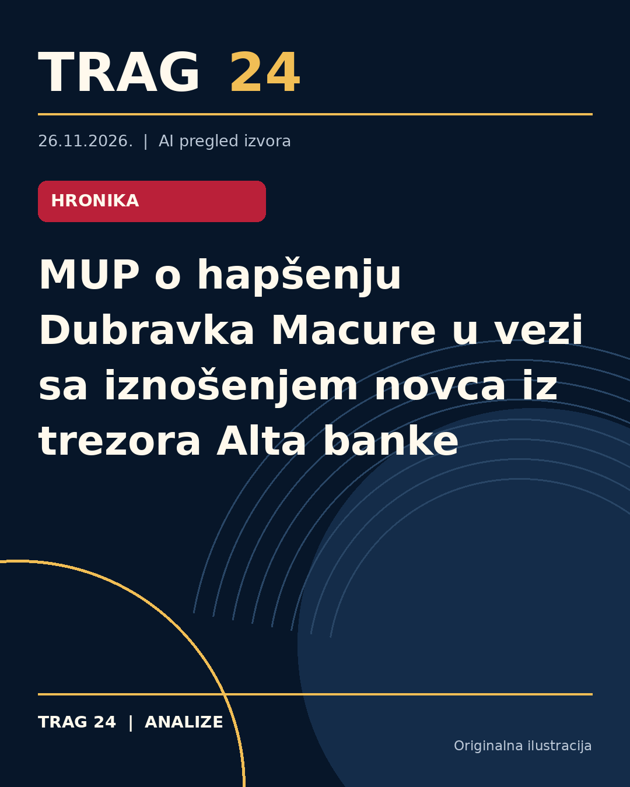

MUP o hapšenju Dubravka Macure u vezi sa iznošenjem novca iz trezora Alta banke

ŠTA SE DOGODILO
Ministarstvo unutrašnjih poslova saopštilo je da je uhapšen Dubravko Macura, brat vlasnika i predsednika Upravnog odbora Alta banke Davora Macure, u okviru istrage poslovanja banke. Pored njega, uhapšeni su i direktor kompanije Alta group, T. B., i blagajnik J. P. iz trezora banke. Sumnja se da su tokom perioda od 2021. do 30. oktobra 2026. nezakonito iznosili gotov novac iz trezora banke i preneli ga na privatni račun Davora Macure, čime je Alta banka pretrpela štetu veću od 45 milijardi dinara.
HRONOLOGIJA
Istraga je usledila nakon što je Narodna banka Srbije 30. oktobra oduzela dozvolu za rad Alta banci. Po nalogu Javnog tužilaštva za organizovani kriminal, pripadnici MUP-a sproveli su hapšenje Dubravka Macure i drugih osumnjičenih od 24. do 26. novembra 2026. godine. Prethodno je u novembru uhapšen i Davor Macura zbog sumnje na zloupotrebu položaja u vezi sa novcem iz trezora banke, kojem je određen pritvor do 30 dana.
ŠTA NAVODE IZVORI
Prema navodima MUP-a, Dubravko Macura je kao specijalni savetnik za operativno-tehničke poslove u Alta banci, po nalogu Davora Macure, neovlašćeno ulazio u depo trezora i iznosio novac u evrima, koji je predao bratu. Direktor Alta group T. B. navodno je prekoračio svoja ovlašćenja tako što je usmeno nalagao blagajnici J. P. da knjiži uplate pazara koje nisu imale pokriće u gotovini na račun kompanije. Sa tog računa novac je prebacivan na Davorov privatni račun. Ukupna protivpravna imovinska korist iznosi oko 45,5 milijardi dinara, dok je bankarsko društvo oštećeno.
ŠTA JE POTVRĐENO
Potvrđeno je hapšenje troje osumnjičenih: Dubravka Macure, T. B. i J. P. Svi su zadržani do 48 sati i privedeni Javnom tužilaštvu za organizovani kriminal. Dubravko Macura obavljao je funkciju specijalnog savetnika za tehničke i sigurnosne poslove u Alta banci, Tatjana Bundalo (T. B.) je direktor kompanije Alta group, dok je J. P. blagajnik u trezoru banke. Takođe, potvrđeno je da istraga obuhvata period od 2021. do oktobra 2026. godine i da je protivpravna šteta višemilijardna.
ŠTA NIJE POTVRĐENO
Nije zvanično potvrđeno da li su optužbe protiv osumnjičenih legalno dokazane u sudskom postupku, kao ni konkretni detalji o tome kako je novac dalje korišćen ili da li su drugih lica umešana u slučaj. Takođe, detalji o daljoj sudbini uhapšenih i rezultatima istrage zasad nisu poznati.
ŠTA OSTАJE OTVORENO: Ostaje da se prati dalji tok tužilačke istrage i sudska procedura u ovom slučaju, kao i eventualne dodatne mere koje će biti preduzete protiv ostalih odgovornih lica u Alta banci i povezanim preduzećima. Pitanje konkretnih posledica po banku i eventualnog povraćaja oduzete imovine takođe je otvoreno za dalje razmatranje.
Izvori
- https://nova.rs/vesti/hronika/oglasio-se-mup-o-hapsenju-dubravka-macure-brata-vlasnika-alta-banke-sumnjici-se-da-je-iz-trezora-iznosio-novac-steta-veca-od-45-milijardi-dinara/
- https://www.blic.rs/vesti/hronika/oglasio-se-mup-o-hapsenju-brata-vlasnika-alta-banke/zl9yp1z
Ova analiza je pripremljena uz pomoć veštačke inteligencije na osnovu javno dostupnih izvora. Navodi izvora nisu nužno nezavisno potvrđeni.